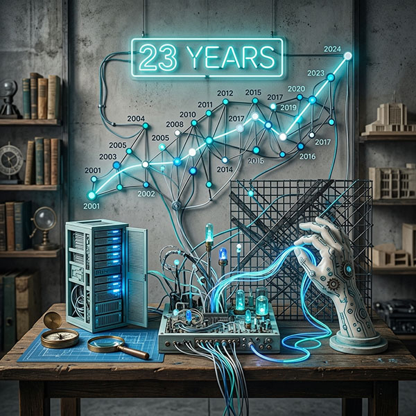

23 Years of Pattern Recognition
We've seen every trend, every algorithm update, every "next big thing." That experience means we spend your budget on what works, not what's fashionable.
Live Web Studios · Est. 2004 · North Jersey
In 2004, Jon Wolf launched Live Web Studios out of a simple conviction: small businesses deserve the same quality web presence as Fortune 500 companies.
Two decades later, that conviction hasn't changed. What has changed is everything else.
We've watched the web evolve from static HTML brochures to dynamic CMS platforms to the AI-powered landscape we operate in today. We didn't just adapt — we got ahead.
Today, LWS is a full-service digital agency specializing in AI-assisted web development, SEO, hosting, and business automation. We serve clients across New Jersey and nationwide.
And yes — we still answer the phone.
We've seen every trend, every algorithm update, every "next big thing." That experience means we spend your budget on what works, not what's fashionable.
We rebuilt our entire pipeline around AI tools in 2023. Faster builds, smarter SEO, better imagery — without inflating what we charge you.
You work directly with the person who built the business. No handoffs. No phone trees.
We don't build sites you'll need to replace in 18 months. Static-HTML architecture: fast, secure, and infinitely portable.
Jon Wolf is the founder and president of Live Web Studios. With over two decades in web design, development, and SEO, Jon brings a rare combination of technical depth and business strategy to every engagement.
When he's not rebuilding client sites with AI, Jon is a professional musician — gigging nationally as a keyboardist and guitarist. That cross-discipline creativity shows up in everything LWS produces.
Jon is also the founder of Live Web Photos and Live AI Studios, extending the LWS ecosystem into AI image services and enterprise AI consulting.
Get in Touch →
To build web presences that generate real business results — not just pretty pictures on a screen.
A future where every small business has access to enterprise-grade digital infrastructure, powered by AI and maintained by humans who actually care.
From quick consults to full rebuilds — talk to the person who'll actually do the work.
Start a Project →